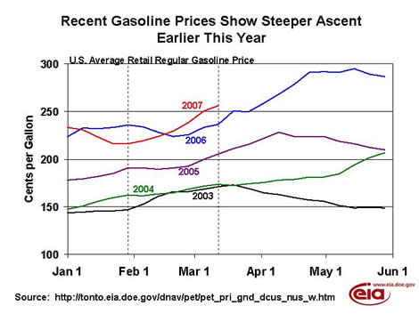
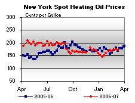

Released on March 14, 2007
(Next Release on March 21, 2007)
Vying for the Nation’s Attention
Even with the country’s attention shifting towards college basketball and the final 12 contestants on American Idol this week, gasoline prices are still on the minds of many people. As the chart below illustrates, in recent years, gasoline prices have not risen as much between the end of January and the middle of March, as they have this year. (On a percentage basis, the increases in 2000 and 2003 are closer to the increase seen this year, but still fall short.) From CNN to the Washington Post to other media throughout the country, the topic of rising retail gasoline prices is hard to ignore.
The chart below shows the path average retail prices have taken over the last 5 years during the first 5 months of the year. Inevitably, if for no other reason than an increase in seasonal demand, retail gasoline prices will increase at some point during the first part of the year. Sometimes, as was the case the previous two years (2005 and 2006), the price begins increasing well into February and continues into April. In 2004, prices generally increased throughout the first 5 months of the year, while in 2003, the timing was the most similar to this year, albeit at a much smaller level and a smaller overall increase. What is also interesting to see from the chart below is how the absolute level of prices tended to increase each year.

So, does this mean that prices will continue to rise and top last year’s peak price during the first 5 months of the year of $2.95 per gallon? Not necessarily. It is important to understand why prices have risen so dramatically this year before trying to project how high they might reach. First, crude oil prices are considerably higher than the $50 per barrel price seen in mid-January, as cold weather finally arrived in the United States, boosting heating fuels demand. Crude oil prices have also been supported by OPEC production cuts, which have begun to impact consuming countries. Second, the gasoline market has tightened, with demand running high relative to seasonal norms, at a time when refiners have focused on the production of distillate fuels used for heating. Third, refinery maintenance and some unplanned refinery outages have also reduced gasoline production in recent weeks. Finally, gasoline imports have also dropped, falling below 1 million barrels per day the last six weeks after averaging 1.15 million barrels per day in 2006. After receiving a lot of gasoline imports earlier in the season, gasoline stocks are relatively low in Europe and refinery maintenance has begun there as well, just as other parts of the world see an increasing need for gasoline (e.g., a major refinery outage in Nigeria). As a result, the arbitrage for shipping marginal gasoline supplies from Europe to the United States diminished considerably, further limiting imports.
With demand continuing at a strong pace, the decline in supplies reduced gasoline inventories at a faster-than-normal rate. While absolute gasoline inventories remain above the normal band for this time of year, on a days-of-supply basis, they are about 1 day lower than the last 2 years, and the second lowest in the last 5 years.
Reflecting these conditions, spot gasoline prices may continue to rise, at least until U.S. prices rise sufficiently relative to Europe to again attract significantly higher imports. Regardless, retail prices may continue to rise over the coming weeks as higher wholesale prices are passed through to the retail level. Seasonally higher demand will also contribute to market pressures over the next few months, as gasoline prices typically increase along with demand during the spring and summer months and with the shift to gasoline meeting more stringent summer specifications. However, once refineries return from maintenance and imports increase, supplies appear to be sufficient to keep the national average retail price this spring below last spring’s peak level absent any major unanticipated supply disruptions.
Residential Heating Oil Prices Stable, Propane Prices Up as Winter Fuel Season Wanes
Residential heating oil prices decreased almost imperceptibly during the period ending March 12, 2007. The average residential heating oil price moved downward by 0.1 cent per gallon last week to reach 249.5 cents per gallon, an increase of 7.6 cents from this time last year. Wholesale heating oil prices fell by 4.3 cents to reach 184.2 cents per gallon, which was an increase of 7.4 cents compared to the same period last year.
The average residential propane price increased by 1.7 cents per gallon, reaching 204.6 cents per gallon. This was an increase of 6.2 cents compared to the 198.4 cents per gallon average for this same time last year. Wholesale propane prices also increased, by 2.2 cents per gallon, from 107.7 to 109.9 cents per gallon. This was 15.5 cents higher than the March 13, 2006 price of 94.4 cents per gallon.
These prices come from the last survey done for the 2006/07 winter heating season. Weekly retail and wholesale prices for heating oil and propane will restart for the 2007/08 season beginning in October 2007.
Retail Gasoline and Diesel Prices Up Again
Gasoline prices were up for the sixth consecutive week, increasing 5.4 cents to 255.9 cents per gallon as of March 12, 2007. Prices are now 19.3 cents per gallon higher than at this time last year. All regions reported price increases. East Coast prices were up 4.2 cents to 253.3 cents per gallon, while Midwest prices rose 2.2 cents to 248.7 cents per gallon. Prices for the Gulf Coast were up 3.5 cents to 240.2 cents per gallon. Rocky Mountain prices increased 5.9 cents to 241.2 cents per gallon. The largest regional increase was in the West Coast, where prices were up 15.5 cents to 292.0 cents per gallon. California prices were up 17.1 cents to 306.8 cents per gallon, 53.6 cents per gallon above last year’s price.
Retail diesel prices were also higher this week, increasing 5.9 cents to 268.5 cents per gallon. The price is now 14.2 cents per gallon higher than at this time last year. All regions reported price increases. East Coast prices rose 6.5 cents to 266.9 cents per gallon. Midwest prices were up 6.7 cents to 267.3 cents per gallon. The Gulf Coast saw an increase of 5.7 cents to 264.4 cents per gallon, while Rocky Mountain prices were up 7.8 cents to 273.6 cents per gallon. Prices on the West Coast saw an increase of 1.6 cents to 281.1 cents per gallon. California prices rose 0.2 cent to 289.9 cents per gallon. Prices there are 15.2 cents per gallon higher than at this time last year.
Propane Stockdraw Slows
The dramatic shift to warmer temperatures last week contributed to significantly slow the recent fast pace of propane inventory withdrawals seen over the past several weeks. Following the largest February stockdraw ever, propane inventories posted a relatively modest 1-million-barrel drop that placed the nation’s primary supply of propane at an estimated 27.7 million barrels as of March 9, 2007. The Midwest region accounted for most of the weekly drop in inventories with a 0.9-million-barrel decline last week, followed by the combined Rocky Mountain/West Coast region’s 0.1-million-barrel stockdraw. During this same period, Gulf Coast inventories fell by 0.1 million barrels while inventories in the East Coast remained relatively unchanged. Propylene non-fuel use inventories also remained unchanged last week but its share of total propane/propylene inventories climbed to 12.5 percent from the prior week’s 12.1 percent share.
Text from the previous editions of “This Week In Petroleum” is now accessible through a link at the top right-hand corner of this page.
| Retail Prices (Cents Per Gallon) | |||||||
| Retail Data | Changes From | Retail Data | Changes From | ||||
| 03/12/07 | Week | Year | 03/12/07 | Week | Year | ||
| Gasoline | 255.9 | Heating Oil | 249.5 | ||||
| Diesel Fuel | 268.5 | Propane | 204.6 | ||||
| Spot Prices (Cents Per Gallon) | |||||||||||||||||||||||||||||||||||||||
|  | |||||||||||||||||||||||||||||||||||||||
|
|||||||||||||||||||||||||||||||||||||||
| Stocks (Million Barrels) | |||||||
| Stocks Data | Changes From | Stocks Data | Changes From | ||||
| 03/09/07 | Week | Year | 03/09/07 | Week | Year | ||
| Crude Oil | 325.3 | Distillate | 120.4 | ||||
| Gasoline | 213.9 | Propane | 27.690 | ||||